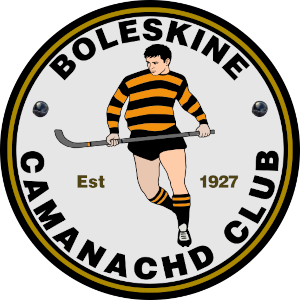
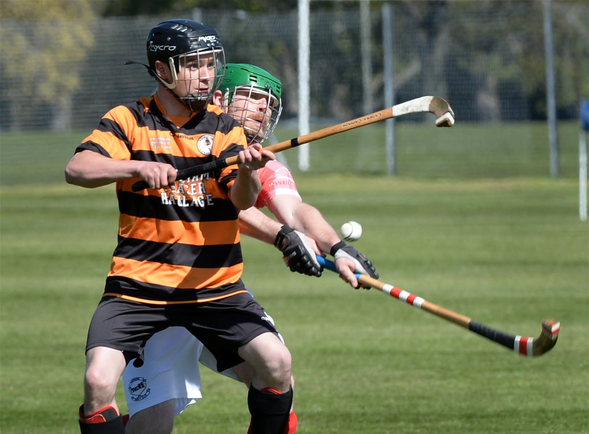

Our Roadmap
Preserving the club's rich heritage while celebrating its future and ongoing development.
Understanding Our Site
Our digital presence consists of two main pillars: the modern interactive portal you see today, which serves as the gateway to our historical archive built underneath.
Modern Homepage Hub
Live Fixtures • Latest News Links • Gallery
The Heritage Archive
75+ Pages of Deep History




Preserving Our History
The primary reason this site was built was to digitize and preserve decades of club history. From old press clippings to historic photographs, we wanted a central hub where the community could explore the legacy of Boleskine Camanachd Club.
A Modern, Interactive Hub
Today, the site functions as a modern portal for our visitors. It dynamically fetches live fixture data and results, provides up-to-date club news, and serves as a clean platform for visitors and the local community.
Expanding the Roadmap
Looking ahead, we plan to continually expand our digital footprint. Future developments include a dedicated user submission portal for historical photos, and expanded profiles for our former players.